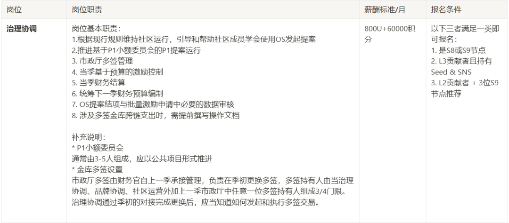
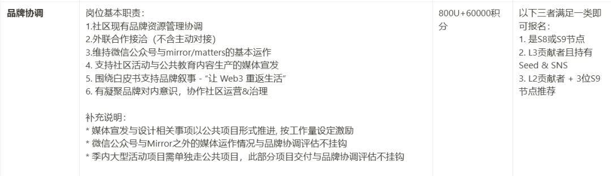
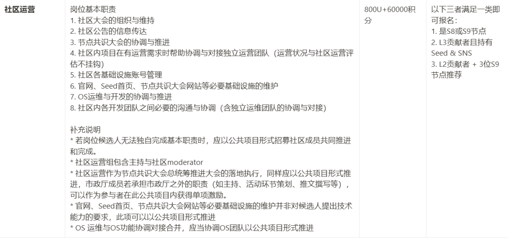

SeeDAO 市政厅是负责内部治理、对外品牌以及技术运营的综合性公共服务机构。
第八届市政厅由节点共识大会选举产生，分别在内部治理&运营、对外品牌、技术支持等 5 个公共服务岗位担任公共事务的工作，在经过了 3 个月的协作后，这 5 位 SeeDAO 市政厅成员也即将卸任。
即将到来的第九届节点共识大会（11.29 ~ 12.1）将会产生新一届的 SeeDAO 节点和相应岗位的市政厅成员，也会持续为社区成员提供优质、用心的公共服务。
本次市政厅公共岗位竞选报名将于北京时间 2024 年 11 月 27 日18:30点截止，请符合条件且感兴趣的伙伴们及时点击链接报名市政厅的公共岗位喔！
报名链接 🔗 https://seedao.notion.site/142cab053d3a80b8aae8da5ffc1fbcfe
（或点击“阅读原文”）
🔗 S9 市政厅岗位设置详情页 ⬇️
https://www.notion.so/seedao/S9-140cab053d3a8106a4c9f84a4c253380#140cab053d3a8103bbdae5c137069ab6
以下是各个岗位的报名条件、职责和薪酬的详细介绍：
↓↓↓
治理协调

👆🏻点击查看大图
品牌协调

👆🏻点击查看大图
社区运营

👆🏻点击查看大图
🕰 市政厅公共岗位选举时间线
公共岗位报名截止: 11月27日 18:30（北京时间UTC+8）
公共岗位竞选演讲: 11月27日 19:00 ～ 21:00
公共岗位选举投票: 11月29日 至 12月01日
公共岗位选举结果公布: 12月02日
///
相信第九届市政厅在职能、目标更加清晰之后，将迸发出令人惊喜的创造力！
你愿意持续引领更多 web2 的用户踏上新大陆、成为与我们同行的共建人吗？
你愿意加入本届市政厅，与社区共同连接 100 万Web3游民、共建数字游民的数字城邦吗？来报名吧！
👇👇👇
https://seedao.notion.site/142cab053d3a80b8aae8da5ffc1fbcfe